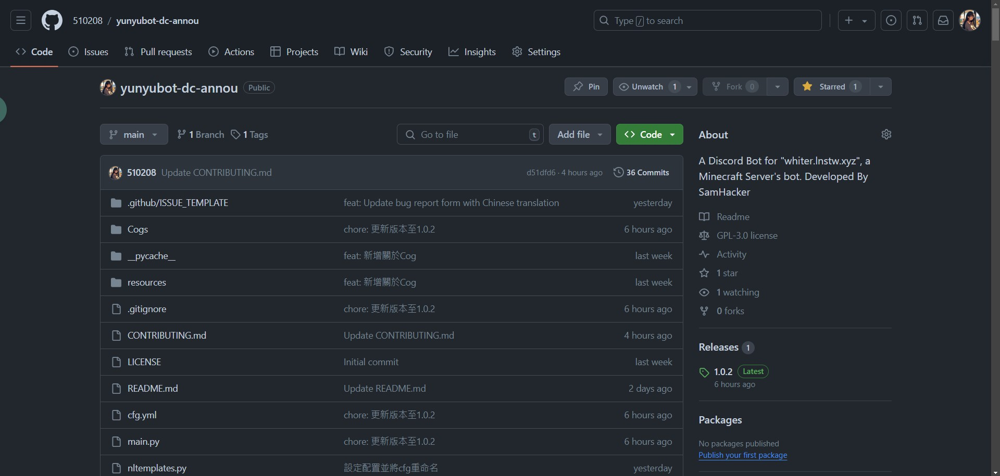

一個簡潔、輕量、開源的機器人
一套擁有完整功能的 Discord Bot
一套擁有完整功能的 Discord Bot
想要知道為什麼你該選這個機器人，而不是其他的框架、或自己寫一個嗎？
本機器人採用大受好評的 Python 與 Discord.py，讓你可以不必擔心程式碼的錯誤
機器人的 YAML 配置文件，讓你不用打開原始碼，而是著重在完善自己的社群！
本機器人的原始碼完全開源，你可以自由地修改、發布，而不用擔心任何法律問題！
遇到問題了嗎？前往 GitHub 儲存庫，你可以在那裡發問，甚至幫助我們！
立即加入使用本機器人的行列吧！
從我們的GitHub頁面下載最新版本的機器人
設定機器人的設定檔，以及其他設定
執行機器人，並開始使用
享受使用機器人的樂趣
願意協助我們的開發嗎？加入我們吧！
